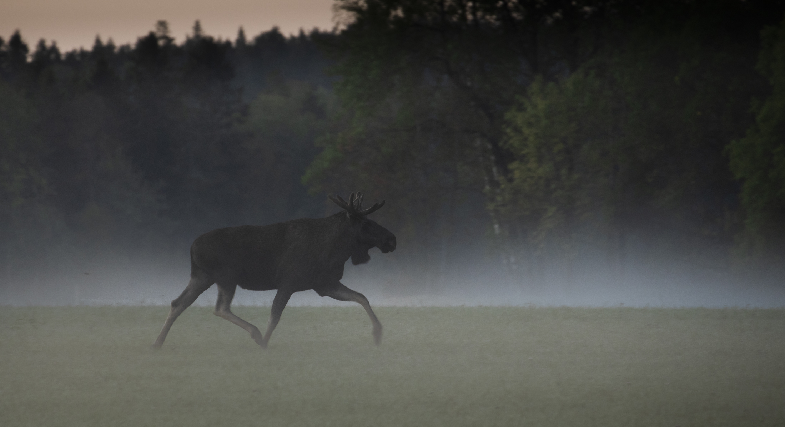

I denne oppgaven skal dere vurdere og sammenligne elgbestandene i ulike kommuner. Dere vil lære å finne offentlig tilgjengelige jaktindekser og bruke disse til å beregne kondisjon, bestandsstørrelse og effekt av ulike avskytningsregimer. Oppgaven skal til slutt resultere i et formelt notat fra kommunal miljøvernleder.
Hvis dere ikke kan bruke egen kommune, kan dere bruke Ås-datasettet. Last først ned zip-filen, pakk den ut, og last deretter filene opp i læringsstien på samme måte som filer fra SSB og Hjorteviltregisteret. Behold filnavnene uendret.
Zip-filen inneholder SSB-filen til oppgave 1 og filene fra Hjorteviltregisteret som trengs i oppgave 2, 3 og 4.
Fellingstall gir et langsiktig bilde av hvordan bestanden har endret seg.
Kalveproduksjon, slaktevekter og ku/okse-forhold viser om stammen er produktiv.
En stabil referanseperiode brukes til å regne om indekser til bestand og elg per km².
En modellbestand på 1000 dyr viser hvordan valg av kalveuttak påvirker kjøttutbytte.
Til slutt skal resultatene omsettes til et kort, faglig forvaltningsnotat.
Elgforvaltning kan forstås som et enkelt, men presist «bokholderi» med dyr: vi må holde orden på hvor mange kalver som produseres, hvor mange dyr som tas ut, og hvordan uttaket fordeles på kalv, åring, ku og okse. Denne læringsstien går derfor fra observasjoner i jaktstatistikken til beregninger og til slutt forvaltningsmessige vurderinger.
Norske elgbestander overvåkes ved at samtlige sette og felte dyr under elgjakta protokollføres. Vi kaller materialet «Sett elg». Fra dette materialet kan vi lage en indeks for bestandsutviklingen, kalveproduksjonen, samt kjønns- og aldersstrukturen i stammen.
Start med å skrive innledningen til notatet deres. Ta med litt generelt om den valgte kommunen som elghabitat (for eksempel høyde over havet, vinterens lengde, dominerende skogtyper). Informer også kort om hva dere vil vurdere i notatet.
I forvaltningen starter vi ofte med en enkel observasjon: skytes det flere eller færre dyr enn før? Fellingstallene alene forteller ikke hele sannheten, men de gir et historisk bakteppe. Når du senere vurderer kondisjon og tetthet, skal du spørre: passer de nye beregningene med den lange utviklingen?
Beskriv resultatet med henvisning til figuren (for eksempel: "Det var en klar nedgang i fellinger i perioden..."). Hvilke faktorer tror du best forklarer de største svingningene du observerer?
Mål på samlet reproduksjon i bestanden. Dette tallet brukes som r i produksjonsmodellen i oppgave 4B.
Mål på hvor mange kalver de produktive kuene har. Nyttig for å tolke tvillingrate, men brukes ikke direkte som r.
Beskriver kjønnsraten. Flere kuer per okse kan øke produksjonspotensialet, men veldig få eldre okser kan gi seinere brunst og svakere kalver.
I mange elg- og hjortebestander skytes hanndyr hardt. Hjeljord peker på at eldre og store okser kan bidra til tidlig brunst og god kalvekvalitet. Lav okseandel gir sjelden alene dramatiske fall i kalvevekt, men en skjev kjønnsrate kan likevel påvirke tidspunkt for paring, aldersstruktur og genetisk utvikling. Derfor skal ku/okse-forholdet vurderes biologisk, ikke bare regnes som et tall i modellen.
Før vi lar datamaskinen analysere filene deres, må vi sikre at matematikken sitter! For å finne den ekte gjennomsnittsvekten til kalvene i et jaktlag, kan man ikke bare plusse sammen oksevekten og kuvekten og dele på to. Vi må ta hensyn til hvor mange dyr som ble skutt av hvert kjønn (veid snitt).
Dra inn byggeklossene for å regne ut snittvekten hvis jaktlaget skjøt 10 oksekalver (à 65 kg) og 15 kukalver (à 58 kg).
Tips: Hvis en boks ligger lenger ned på skjermen, hold byggeklossen rolig nær nederste kant av vinduet. Da ruller siden sakte nedover. Du kan også klikke på en byggekloss og deretter klikke i riktig tomrom.
Elg_SettKalvPerKu.xlsxElg_SettKalvPerKalvku.xlsxElg_SettKuPerOkse.xlsxElg_Slaktevekt.xlsxBruk disse filene dersom dere arbeider med Ås kommune. Last ned filene og last opp alle fire samtidig i feltet under.
Tips: Slaktevektfilen brukes også videre i oppgave 4.
Vurder utviklingen i reproduksjon og slaktevekter i deres kommune. Hvis dere ser en synkende kondisjon: hva slår ut sterkest og først – reproduksjon eller slaktevekt? Stemmer funnene deres med teorien fra den grå boksen på side 157 i læreboka?
Hvordan har kjønnsraten (ku per okse) utviklet seg i kommunen? Vurder både produksjonspotensialet og mulige biologiske konsekvenser: få eldre okser, seinere brunst, kalvekvalitet og genetiske effekter.
Modellen bygger på en enkel stabilitetsidé: dersom bestanden er stabil, må jaktuttaket omtrent tilsvare netto produksjon av kalver. Vi bruker derfor antall felte dyr som mål på hvor mange kalver bestanden måtte produsere, og regner baklengs til hvor mange produktive kuer og hvor stor totalbestand som trengs.
For å tegne grafen og regne ut den historiske bestanden, trenger kalkulatoren 4 statistikkfiler fra Hjorteviltregisteret. Gå til registeret og last ned disse filene som Excel:
Elg_Sett.xlsxElg_Felt.xlsxElg_SettPerJegerdag.xlsxElg_FeltPerJegerdag.xlsxBruk disse filene dersom dere arbeider med Ås kommune. Last ned filene og last opp alle fire samtidig i feltet under.
For å regne ut hvor mange elg det var totalt i referanseåret, må vi regne oss baklengs via kalveproduksjonen. Dra boksene for å plassere dem i riktig tomrom.
Tips: Hold boksen rolig nær nederste eller øverste kant av vinduet hvis du må flytte den til et felt som ligger utenfor skjermen. Siden ruller da sakte. Du kan også klikke på en boks og deretter klikke i riktig tomrom.
Her skal dere skille mellom to spørsmål: A) hvor mye kjøtt kommunen faktisk fikk ut i fjor, og B) hvordan kjøttutbyttet kan endre seg når samme modellbestand forvaltes med lavt, middels eller høyt kalveuttak. Del B er en modelløvelse, ikke en direkte beregning av kommunens faktiske bestand.
Vi benytter beregningsmetoden fra Viltet: Biologi og naturforvaltning. Tenk på modellen som en kontrollert læringsøvelse: vi holder vinterbestanden fast på 1000 dyr, lar 15% av voksne kuer og okser skytes, og varierer bare hvor stor andel av årets kalver som tas ut.
Hvis p = 1,5, r = 0,7 og 10% av kalvene skytes, blir b = 0,9. Da gir modellen omtrent 435 kuer, 290 okser og 275 kalver i vinterstammen. Neste vår fødes ca. 305 kalver, og dette blir også totaluttaket som kan skytes dersom bestanden skal holdes stabil.
Kalkulatoren har automatisk hentet inn og låst gjennomsnittlig kalv per ku, kalv per kalvku, ku per okse og slaktevekter for de siste 5 årene basert på filene dine fra oppgave 2. Kalv per ku brukes i selve 4B-modellen. Kalv per kalvku vises som støtte for tolkning av reproduksjon og tvillingrate.
Lav kalveskyting betyr at flere kalver blir åringer neste år, og dermed kan flere åringer tas ut i modellen. Høy kalveskyting gir flere felte kalver, men færre åringer. Sammenlign derfor både antall dyr og kg kjøtt.
Hva er effekten av høy versus lav avskyting av kalv på kjøttutbyttet i din kommune? Sammenlign både totalt antall dyr og kg kjøtt. Forklar hvorfor høy kalveavskyting ofte gir flere felte dyr, men ikke nødvendigvis høyere kjøttutbytte. Vurder også om kalveproduksjonen i kommunen er høy nok til at kalveskyting er lønnsomt.
En evaluering av "Sett elg"-overvåkingen utført av NINA peker på at oppdagbarheten av hjortevilt kan variere. Blant annet fant forskerne ut at antallet elg som observeres ikke nødvendigvis øker proporsjonalt med økt jaktinnsats. Årsaken antas å være todelt:
Tenk deg et jaktlag i kommunen som øker fra 4 til 8 medlemmer. Hvordan kan den gamle regelen om dobbeltobservasjoner føre til at forvaltningen feilaktig tror bestanden er i nedgang? Og hvorfor vil NINAs foreslåtte endring gi en riktigere indeks?
Et godt forvaltningsråd kobler sammen historikk, kondisjon, tetthet, kjøttutbytte og kjønnsrate. Spør derfor: Er bestanden for tett i forhold til beitet? Er kalveproduksjonen lav eller høy? Er det grunn til å spare flere okser, redusere bestanden, eller endre kalveuttaket? Målet er ikke bare størst mulig kjøttutbytte, men en robust og produktiv stamme over tid.
Trekk trådene sammen. Hvilke forvaltningsråd vil du/dere gi for elgstammen i kommunen? (Bør kvotene opp, ned eller holdes stabile? Bør man rette uttaket mot spesifikke aldersgrupper?). Sammenlign gjerne kort med de andre kommunene i gruppa dersom dere jobber sammen.
Når du er ferdig med alle tekstene, trykk på knappen under for å generere det komplette utkastet til notatet. Kopier teksten inn i Word/Google Docs og legg ved grafene du har lagret (Høyreklikk på grafene og velg "Lagre bilde som").